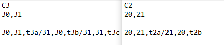
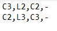
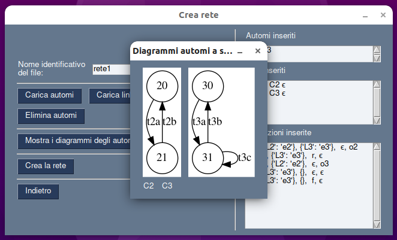

In questa pagina viene presentata la sintassi con cui costruire i file .txt degli
automi a stati finiti, dei link e delle transizioni. NB: I file che viene chiesto di creare devono essere file .TXT separati: un file per ogni automa,
un file per tutti i link e un file per le transizioni (come mostrato negli esempi).

Automi a stati finiti
Negli automi a stati finiti si deve tenere conto di 4 elementi:
→ Nome : è il nome dell'automa.
→ Stati: sono gli stati dell'automa. Poiché ne possono esistere più di uno devono essere
separati tra di loro da una ",".
→ Stati finali: sono gli stati finali dell'automa. Possono non esistere, in questo caso dovrà essere lasciata
vuota la riga corrispondente (come nell'immagine d'esempio), altrimenti se ne esistono più di uno gli stati finali vanno separati da una ",".
→ Transizioni: sono le transizioni tra gli stati dell'automa, sono identificate da 3 parametri: stato iniziale
, stato finale e etichetta. I parametri sono separati tra di loro da una ",". Più transizioni
sono separate tra loro da "/" (come nell'immagine d'esempio).
Link
In questo file sono contenuti i link tra gli automi
che compongono la rete di automi. Il file dei link prevede di riservare per
ogni link una riga. Ogni riga deve contenere:
→ Automa di partenza : è il nome dell'automa da cui esce il link.
→ Nome : è il nome del link.
→ Automa di arrivo : è il nome dell'automa in cui entra il link.
→ Stato : è lo stato del link, nell'esempio entrambi i link sono vuoti e viene quindi utilizzato il simbolo -.
NB: Tutti i parametri sono tra loro separati da ",".

Transizioni
Il file delle transizioni è il file più complesso
perché contiene tutte le transizioni nella rete e i dati ad esse relativi.
Il file delle transizioni prevede di riservare
per ogni transizione una riga. Ogni riga deve contenere:
→ Nome automa : è il nome dell'automa.
→ Etichetta: è l'etichetta che identifica la transizione.
→ Eventi in ingresso: sono gli eventi che servono alla transizione per scattare, ovvero per essere abilitata. Devono essere contenuti all'interno di "{" e "}" e per ogni evento deve essere identificato il link su cui l'evento
deve trovarsi, per separare il link e il suo evento si usa ":" (nell'esempio sulla riga 1 si ha per gli eventi in ingresso come link L2 su cui si trova e2). Nel caso in cui ci siano più eventi in ingresso si separano tra loro con la ",". Se non ci sono eventi in ingresso si lasciano "{}" vuote. L'evento identifica lo stato attuale del link.
→ Eventi in uscita: sono gli eventi che si troveranno sul link a transizione scattata. Devono essere contenuti all'interno di "{" e "}" e per ogni evento deve essere identificato il link su cui l'evento
si troverà, per separare il link e il suo evento si usa ":" (nell'esempio sulla riga 1 si ha per gli eventi in uscita come link L3 su cui si trova e3). Nel caso in cui ci siano più eventi in uscita si separano tra loro con la ",". Se non ci sono eventi in uscita si lasciano "{}" vuote. L'evento identifica lo stato prossimo del link.
→ Etichetta di rilevanza: è l'etichetta di rilevanza associata alla transizione, se non è presente un'etichetta deve essere inserito il simbolo -.
→ Etichetta di osservabilità:è l'etichetta di
osservabilità associata alla transizione, se non è presente un'etichetta deve essere inserito
il simbolo -.
NB: Tutti i parametri sono tra loro separati da ",".
Esempi
In questa sezione è possibile vedere dei file d'esempio:
Una volta pronti i file da inserire è possibile avviare il programma per la creazione della rete e la costruzione degli spazi comportamentali. Per prima cosa vanno caricati i
file relativi agli automi, ai link e alle transizioni, altrimenti non sarà possibile procedere.
1.
Per prima cosa bisogna inserire il nome della cartella di salvataggio dei file. Per abilitare i pulsanti successivi bisogna premere su "Salva".
2.
A questo punto è necessario caricare i file relativi agli automi, finché non venie inserito il primo automa non è possibile fare altro.Schiacciando sul pulsante "Carica automi" viene presentata una finestra da cui selezionare il file da aprire (un file alla volta).
3.
Una volta inserito vengono abilitati i pulsanti di visualizzazione dei grafi degli automi inseriti e il pulsante per la loro eliminazione.
L'altro pulsante che viene abilitato è quello dell'inserimento del file dei link. Nell'immagine a fianco viene mostrato il risultato della
selezione del pulsante "Mostra i diagrammi degli automi". Per proseguire bisogna chiudere la finestra del diagramma.

4.
Dopo aver inserito tutto, per avviare la creazione della rete bisogna solo premere il pulsante relativo.
5.
Nella finestra di creazione della rete si può vedere nella prima colonna a sinistra il diagramma della rete appena creata. Nella colonna
più a destra è presente un riquadro che ha lo scopo di una console, qui vengono stampati dei messaggi di conferma relativi all'esecuzione dei
comandi dati tramite pulsanti. L'unico pulsante premibile è quello per la creazione dello spazio comportamentale, ma una volta premuto viene abilitato
il successivo e così via. Ogni pulsante abilita parte dei pulsanti successivi.
6.
Schiacciando sui pulsanti "Vedi diagramma" viene presentata una finestra in cui è possibile visualizzare il diagramma relativo al calcolo
effettuato dal pulsante sulla stessa riga. Per proseguire bisogna chiudere la finestra del diagramma.
Nella figura a fianco viene mostrato il risultato del pulsante "Vedi file di redenominazione".Per proseguire bisogna chiudere la finestra del file.
8.
Per abilitare i pulsanti relativi all'osservazione è necessario inserirne una nel riquadro indicato, per concludere l'inserimento è necessario premere su "Inserisci".
Il pulsante a destra serve per pulire la finestra e inserire una nuova osservazione, oppure basta modificare quella già presente e nuovamente premere su "Inserisci".
L'osservazione va inserita separando le singole osservazioni olo con una ,: act,sby,nop.
9.
Al termine dell'esecuzione di tutti i compiti viene stampata nel box a destra l'espressione regolare risultate dall'ultimo calcolo.